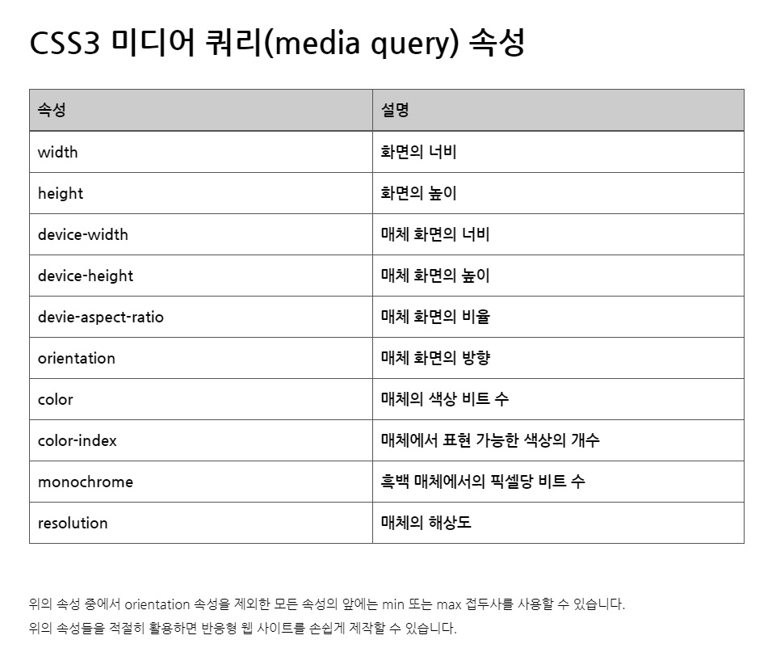
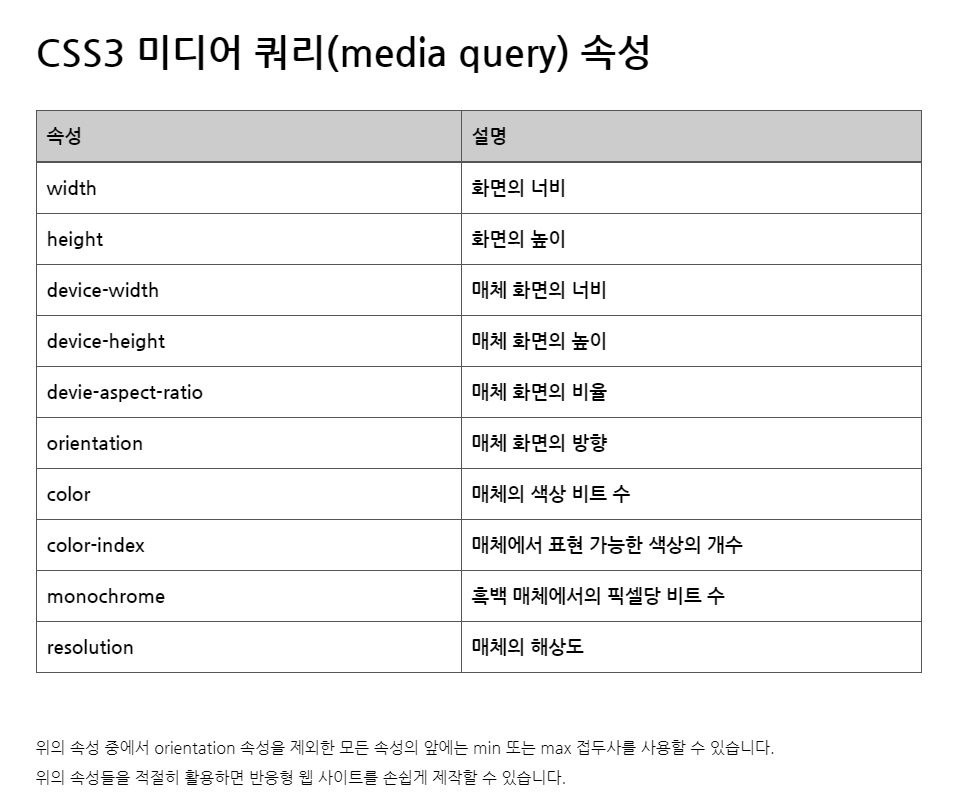

CSS
CSS(Cascading Style Sheets)는 HTML로 작성된 문서를 쓰기 위한 스타일 시트 언어입니다.
HTML은 문서의 골격을 이룬다면, CSS는 그 골격에 맞는 디자인 작업 언어라고 생각하면 됩니다.
CSS 선택자
CSS 선택자를 통해 요소를 선택하고 속성을 줄 수 있습니다.

id 선택자와 class 선택자
- id 선택자
- 하나의 태그만 식별하기 위한 선택자입니다.
- 하나의 태그에서 하나만 사용할 수 있습니다.
"#"으로 표시합니다.
- class 선택자
- 여러개의 태그를 식별하기 위한 선택자입니다.
- 하나의 태그에서 여러 개를 사용할 수 있습니다.
"."으로 표시합니다.
기본 선택자
| 종류 | 예시 | 이름 |
|---|---|---|
| 태그 선택자 | p {color:#fff;} | p 태그를 선택하여 글씨 색을 하얀색으로 변경합니다. |
| 클래스 선택자 | .class {color:#fff;} | class 클래스를 선택하여 글씨 색을 하얀색으로 변경합니다. |
| 아이디 선택자 | #id {color:#fff;} | id 아이드를 선택하여 글씨 색을 하얀색으로 변경합니다. |
| 그룹 선택자 | p, div {color:#fff;} | p 태그와 div 태그를 선택하여 글씨 색을 하얀색으로 변경합니다. |
| 전체 선택자 | * {color:#fff;} | 전체 태그를 선택하여 글씨 색을 하얀색으로 변경합니다. |
계층 선택자
| 종류 | 예시 | 이름 |
|---|---|---|
| 하위 선택자(Descendant Selector) | div p {color:#fff;} | div 태그의 모든 자식 중 p 태그를 모두 선택하여 글씨 색을 하얀색으로 변경합니다. |
| 자식 선택자(Child Selector) | div > p {color:#fff;} | div 태그의 모든 자식 중 첫번째 자식 p 태그를 선택하여 글씨 색을 하얀색으로 변경합니다. |
| 형제 선택자(sibling Selector) | div ~ p {color:#fff;} | div 태그의 인접한 형제 p 태그를 모두 선택하여 글씨 색을 하얀색으로 변경합니다. |
| 인접 형제 선택자(Adjacent Sibling Selector) | div + p {color:#fff;} | div 태그의 인접한 형제 첫번째 p 태그를 선택하여 글씨 색을 하얀색으로 변경합니다. |
속성 선택자
| 종류 | 예시 | 이름 |
|---|---|---|
| [name] | a[href] | a 태그 속성 중에 href가 있으면 선택합니다. |
| [name="value"] | a[href="#header"] | a 태그 href 속성의 값이 '#header'이면 선택합니다. |
| [name~="value"] | a[href~="web"] | a 태그 href 속성의 값이 'web'을 포함한 요소를 선택합니다. |
| [name|="value"] | a[href|="web"] | a 태그 href 속성의 값이 'web'이거나 'web'으로 시작하는 요소를 선택합니다. |
| [name^="value"] | a[href^="web"] | a 태그 href 속성의 값이 'web'으로 시작하는 태그를 선택합니다. |
| [name*="value"] | a[href*="web"] | a 태그 href 속성의 값이 'web'이 포함되어 있는 태그를 선택합니다. |
| [name$="value"] | a[href$="com"] | a 태그 href 속성의 값이 'com'으로 끝나는 태그를 선택합니다. |
가상 요소
| 종류 | 예시 | 이름 |
|---|---|---|
| ::first-line | p:first-line {color:#fff;} | 문단의 첫 줄에 컬러색을 하얀색으로 변경합니다. |
| ::first-letter | p:first-letter {color:#fff;} | 문단의 첫 글자에 컬러색을 하얀색으로 변경합니다. |
| ::before | p:before {content:"시작"} | 문단 시작 부분에 '시작'이라는 요소를 추가합니다. |
| ::after | p:after {content:"끝"} | 문단 끝 부분에 '끝'이라는 요소를 추가합니다. |
| ::selection | p:selection {color:#fff;} | 드래그로 선택하였을 경우 글씨 색을 하얀색으로 변경합니다. |
가상 클래스
| 종류 | 예시 | 이름 |
|---|---|---|
| :first-child | li:first-line {color:#fff;} | li 자식 요소 중 첫 번째 자식 요소에게 컬러를 하얀색으로 변경합니다. |
| :last-child | li:last-line {color:#fff;} | li 자식 요소 중 마지막 번째 자식 요소에게 컬러를 하얀색으로 변경합니다. |
| :first-of-type | p:first-of-type {color:#fff;} | 자식 요소 중 p 태그 첫 번째 자식 요소에게 컬러를 하얀색으로 변경합니다. |
| :last-of-type | p:last-of-type {color:#fff;} | 자식 요소 중 p 태그 마지막 번째 자식 요소에게 컬러를 하얀색으로 변경합니다. |
| :nth-child() | li:nth-child(2) {color:#fff;} | li 자식 요소 중 2번째 자식 요소에게 컬러를 하얀색으로 변경합니다. |
| :nth-last-child() | li:nth-last-child(2) {color:#fff;} | li 자식 요소 중 뒤에서 2번째 자식 요소에게 컬러를 하얀색으로 변경합니다. |
| :nth-of-type() | p:nth-of-type(2) {color:#fff;} | 자식 요소 중 p 태그 2번째 자식 요소에게 컬러를 하얀색으로 변경합니다. |
| :nth-last-of-type() | p:nth-last-of-type(2) {color:#fff;} | 자식 요소 중 p 태그 뒤에서 2번째 자식 요소에게 컬러를 하얀색으로 변경합니다. |
| :only-child | :only-child {color:#fff;} | 자식 요소 중 유일한 태그 자식 요소에게 컬러를 하얀색으로 변경합니다. |
| :only-of-type | p:only-of-type {color:#fff;} | 자식 요소 중 유일한 p 태그 자식 요소에게 컬러를 하얀색으로 변경합니다. |
| :not() | li:not(:nth-child(2)) {color:#fff;} | li 자식 요소 중 2번째 자식 요소를 제외하고 컬러를 하얀색으로 변경합니다. |
| :root | :root {color:#fff;} | 기본 루트 요소의 컬러를 하얀색으로 변경합니다. |
| :empty | :empty {color:#fff;} | 컨텐츠 요소가 없는 요소의 컬러를 하얀색으로 변경합니다. |
링크 가상 클래스
| 종류 | 예시 | 이름 |
|---|---|---|
| :link | a:link {color:#fff;} | 방문하지 않는 링크의 글씨 색을 하얀색으로 설정합니다. |
| :visited | a:visited {color:#fff;} | 방문한 링크의 글씨 색을 하얀색으로 설정합니다. |
| :hover | a:hover {color:#fff;} | 링크 위에 마우스를 올려 놓았을 경우 글씨 색을 하얀색으로 설정합니다. |
| :active | a:active {color:#fff;} | 링크가 활성화되었을 경우 글씨 색을 하얀색으로 변경합니다. |
폼 관련 선택자
| 종류 | 예시 | 이름 |
|---|---|---|
| :checked | input:checked {color:#fff;} | input 태그가 체크되었을 때 글씨 색을 하얀색으로 변경합니다. |
| :focus | input:link {color:#fff;} | input 태그에 초점이 맞추어졌을 때 글씨 색을 하얀색으로 변경합니다. |
| :enabled | input:enabled {color:#fff;} | input 태그가 사용 가능하면 글씨 색을 하얀색으로 변경합니다. |
| :disabled | input:disabled {color:#fff;} | input 태그가 사용 가능하지 않으면 글씨 색을 하얀색으로 변경합니다. |
CSS 색상
RGB모드
RGB Color 모드는 빛의 삼원색인 '빨강(red)', '초록(Green)', '파랑(Blue)'을 섞어 색을 만듭니다. 색을 섞을수록 점점 밝아지므로 '가산 혼합'이라 부릅니다. 모니터 화면용 작업(프레젠테이션, 웹디자인 등)에서 기본적으로 사용하는 색상 모드입니다.
CMYK모드
CMYK Color 모드는 '시안(Cyan)', '마젠타(Magenta)', '노랑(Yellow)', '검정(Black)'의 원색을 섞어서 색상을 만듭니다. 물감처럼 색을 섞을수록 어두워지므로 '감산 혼합'이라 부릅니다. 출력용 이미지를 작업할 때는 CMYK 색상 모드에서 작업해야 합니다.
16진수 표기법
웹 문서에서 색상을 표현하는 방법은 16진수로 표현하는 방법입니다. 두자리씩 묶어서 #RRGGBB형식으로 표현하며, RR은 빨간색, GG는 초록색, BB는 파란색의 양을 표현합니다. 각 색상이 하나도 섞이지 않았음은 00부터 가득 섞였음은 FF까지 사용할 수 있습니다.
색상이름 표기법
색상 이름을 이용하여 색을 표현할 수 있습니다. 가장 기본적인 16가지를 포함하여 216가지의 색상 이름 표기법이 있습니다.
RGB와 RGBA 표기법
웹 문서에서 색상을 표현하는 RGB(255,255,255)는 십진수를 이용하여 표현합니다. 색이 하나도 섞이지 않았을 때에는 0으로 표시하고, 가득 섞였을 때에는 255로 표현합니다. 숫자는 색상의 양을 나타내고 a는 투명도(Alpha)를 나타냅니다. 투명도 0과 1사이로 표현합니다.
HSL와 HSLA 표기법
웹 문서에서 색상을 표현하는 HSL은 색상(Hue), 채도(Saturation), 밝기(lightness)를 나타냅니다. 색상은 둥글게 배치한 색상환으로 표시하고 0도와 360도에는 빨간색, 120도에는 초록색, 240도에는 파란색이 배치됩니다. 채도가 0%이면 회색톤, 100%이면 순색으로 표시됩니다. 밝기는 0%에서는 가장 어둡고 100%에서는 가장 밝습니다.
CSS 선언
HTML 문서에 스타일을 선언하는 방법은 3가지가 있습니다.
- 내부 스타일(Internal Style Sheet) : head 태그 안에 선언하는 방법
- 외부 스타일(External Style Sheet) : 외부 파일로 연결하는 방법
- 인라인 스타일(Inline Style Sheet) : 태그에 직접 연결하는 방법
<!DOCTYPE html>
<html lang="en">
<head>
<meta charset="UTF-8">
<title>Document</title>
<!-- 내부 스타일 -->
<style>
h1 {color: #fff;}
</style>
<!-- 외부 스타일 -->
<link rel="stylesheet" href="경로">
</head>
<body>
<!-- 인라인 스타일 -->
<h1 style="color: #fff"></h1>
</body>
</html>
float으로 인한 깨짐 현상
float을 쓰게되면 영역의 높이 값이 0으로 줄어들기 때문에 영역을 유지하는 방법이 필요합니다.
- 깨지는 영역에 똑같이
float: left;를 사용합니다. - 모든 영역에 float을 사용하게 되고, 레이아웃이 복잡하면 정확히 어디가 깨지는지 알 수가 없습니다. - float의 성질을 차단하는
clear: both;를 사용합니다. - 레이아웃이 복잡해지면 어디가 깨지는지 알 수가 없습니다. float을 사용한 부모 박스 영역에overflow: hidden;을 사용합니다.- 가상요소
clearfix만들어서 영역 깨짐 현상을 막아줍니다.
상대주소 절대주소
a 태그나 img 태그는 주소를 사용합니다. 이 주소는 상대주소와 절대주소로 나뉩니다.
- 절대주소 : 어떠한 웹 페이지나 파일이 가지고 있는 고유한 경로를 말합니다. 즉 절대로 변하지 않는 주소를 말합니다.
- 상대주소 : 현재 위치한 곳을 기준으로 하는 주소입니다.
이미지 표현 방법
웹 문서에 이미지를 표현하는 방법은 img 태그와 background를 통해 설정할 수 있습니다.
- img 태그로 표현하는 방법 : 이미지에 의미가 있는 경우(로고, 배너)
- background로 표현하는 방법 : 이미지에 의미가 없는 경우(배경 장식)
img 태그로 이미지 표현하기 (대체문자 표현 O)


background 속성으로 이미지 표현하기 (대체문자 표현 X)
이미지 스프라이트를 이용한 이미지 표현 (대체문자 표현 X)
이미지 스프라이트
아이콘 또는 장식을 위한 이미지 요소들은 스프라이트 기법을 활용하여 파일의 사이즈를 최소화하고 효율성을 높일 수 있습니다.
- 여러 번의 서버 요청을 한 번으로 줄일 수 있습니다.
- 이미지 수정이나 관리가 간편합니다.
- 웹 접근성을 준수하기 위해서는 IR 효과를 설정해야 합니다.
IR 효과
IR(Image Replacement)기법은 이미지 대체 텍스트를 제공하기 위한 CSS 기법으로 다양한 기법을 사용하여 이미지 대체 텍스트를 제공할 수 있습니다.
Phark Method
의미 있는 이미지의 대체 텍스트를 제공하는 경우 : 이미지로 대체할 엘리먼트(요소)에 배경 이미지를 설정하고 글자는 text-indent를 이용하여 화면 바깥으로 빼내어 보이지 않게 하는 방법
PWA IR
의미 있는 이미지의 대체 텍스트로 이미지를 off시에도 대체 텍스트를 보여주고자 할 때 : 이미지로 대체할 엘리먼트에 배경 이미지를 설정하고 글자는 span태그로 감싼 후 z-index: -1을 이용하여 화면에 안보이게 처리하는 방법
Screen Out
대체 텍스트가 아닌 접근성을 위한 숨김 텍스트를 제공할 때 사용합니다.
이미지 타입
프로젝트 종류에 따라 여러가지 이미지 타입을 사용할 수 있습니다.
| 종류 | PC Web | Mobile Web | Mobile APP | 투명효과 | 용량 | 애니메이션 |
|---|---|---|---|---|---|---|
| GIF | 기본적으로 사용 | 사용 가능 | 사용 불가능 | 되지만 선명 하지 않음 | 작음 | 가능 |
| JPG | 기본적으로 사용 가능하며, 컬러수가 많을 때 사용 | 운영성 이미지일 때 사용 가능 | 사용 불가능 | 투명하지 않음 | 중간 | 불가능 |
| PNG-8 | 사용 하지 않음 | 기본적으로 사용 | 반투명 효과 없고 컬러가 적을 때 사용 | 되지만 선명 하지 않음 | 작음 | 불가능 |
| PNG-24 | 반투명 효과가 있을 때 사용 | 컬러수가 많거나 반투명 효과가 있을 때 사용 | 기본적으로 사용 | 잘 됨 | 큼 | 불가능 |
| SVG | 사용 가능 | 사용 가능 | 사용 가능 | 잘 됨 | 작음 | 가능 |
- GIF : GIF는 이미지를 저장해도 데이터가 손실 되지 않는 무손실 압축을 사용합니다. Indexed color 속성을 가지고 있어서 최대 256가지의 컬러로만 저장 할 수 있습니다.
- JPG : JPG 이미지는 인간의 눈으로 확인 할 수 없는 정보를 제거하는 방법으로 디테일한 사진 이미지를 가능한한 작게 만들어 놓은 압축된 디자인 파일입니다. 색이 많이 들어가거나 화려한 이미지는 JPG로 표현합니다.
- PNG-8 :
- PNG-24 : JPG처럼
- SVG :
컨텐츠 요소를 보이지 않게 하는 방법
컨텐츠 요소를 보이지 않게 하는 방법은display, opacity, visibility 등이 있습니다.
| 종류 | 반대 | 영역 | 애니메이션 |
|---|---|---|---|
display: none; |
display: block; |
영역 사라짐 | 애니메이션 가능 |
visibility: hidden; |
visibility: visible; |
영역 유지 | 애니메이션 불가능 |
opacity: 0; |
opacity: 1; |
영역 유지 | 애니메이션 가능 |
컨텐츠 요소를 가운데 오게 하는 방법
반응형을 작업할 때 어떤 요소를 가운데 오게 하는 방법은 상당히 중요하고 방법도 여러가지가 있습니다.
가장 기본적인 방법이지만 이 방법은 한 줄(요소)일 경우에서만 해당이 됩니다.- 부모요소(인라인구조) : text-align : center; line-height: (height값과 동일하게)
- 요소(블록구조) : margin:0 auto; line-height: (height값과 동일하게)
요소의 성질을 table로 변환시켜서 가운데 정렬을 하는 방법이지만 table자체를 레이아웃에 많이 사용하지 않기 때문에 잘 쓰지 않는 방법입니다.
- 부모요소 : display:table;
- 자식요소 : display:table-cell, text-align:center; vertical-align:middle;
절대 요소를 이용한 가운데 정렬방법이며, 제일 흔하게 쓰이지만 단점은 영역이 없어지는 것이 단점이어서 반응형을 할 때 사용하기 불편한 점이 있습니다.
- 부모요소 : position:relative;
- 자식요소 : position:absolute; top:50%; left: 50%; margin-top:-(자식 요소 높이값의 반); margin-left:-(자식 요소 가로값의 반);
만약 자식요소의 가로값과 세로 값을 모르고 유동적인 경우에 절대 요소를 사용하여 가운데로 오는 정렬방법입니다.
- 부모요소 : position:relative;
- 자식요소 : position:absolute; top:50%; left: 50%; transform:translate(-50%, -50%);
절대 요소를 이용한 가운데 정렬 방법이지만 흔하게 쓰이지는 않습니다.
- 부모요소 : position:relative;
- 자식요소 : position:absolute; top:0; left:0; top:0; right:0; margin: auto;
CSS3를 이용한 방법이지만 최신 브라우저 이외에서는 작동하지 않는 단점이 있지만 표준화 된다면 앞으로 많이 쓰일 방법입니다.
- 부모요소 : height 값 설정
- 자식요소 : display: flex; justify-content: center; align-items: center;.
미디어 쿼리
미디어 쿼리는 단말기의 유형(출력물 vs. 화면)과, 어떤 특성이나 수치(화면 해상도, 뷰포트 너비 등)에 따라 웹사이트나 앱의 스타일을 수정할 때 사용합니다.
- CSS2 에서는 @media 규칙을 통해 서로 다른 매채 유형을 위한 맞춤식 스타일시트를 지원합니다.
- CSS3 에서는 @media 규칙을 더욱 발전시켜 매체 유형과 하나 이상의 표현식으로 구성된 미디어 쿼리를 사용할 수 있습니다.
- 미디어 쿼리는 width, height, color 속성과 같은 미디어 관련 속성을 이용한 표현식을 통해 스타일이 적용되는 범위를 조절할 수 있습니다.
- 미디어 쿼리를 사용하면 콘텐츠를 별도로 변경하지 않아도 웹 페이지에 접속하고 있는 기기에 알맞은 형태로 스타일이 조정됩니다.
 

margin
margin 속성은 요소의 바깥쪽 여백을 설정합니다.
margin-top: 10px;요소의 위쪽 바깥 여백을 설정margin-right: 11px;요소의 오른쪽 바깥 여백을 설정margin-bottom: 12px;요소의 아래쪽 바깥 여백을 설정margin-left: 13px;요소의 왼쪽 바깥 여백을 설정margin: 10px 11px 12px 13px;요소의 위쪽/오른쪽/아래쪽/왼쪽 바깥 여백을 설정margin: 10px 11px 12px;요소의 위쪽(10px)/왼쪽,오른쪽(11px)/아래쪽(12px)margin: 10px 11px;요소의 위쪽,아래쪽(10px)/왼쪽,오른쪽(11px)margin: 10px;요소의 위쪽/오른쪽/아래쪽/왼쪽(10px)margin: auto;자동값 또는 기본값 또는 초기값margin: 0 auto;블록 구조를 가운데 정렬할 때 사용
padding
margin 속성은 요소의 안쪽 여백을 설정합니다.
padding-top: 10px;요소의 위쪽의 안쪽 여백을 설정padding-right: 11px;요소의 오른쪽의 안쪽 여백을 설정padding-bottom: 12px;요소의 아래쪽의 안쪽 여백을 설정padding-left: 13px;요소의 왼쪽의 안쪽 여백을 설정padding: 10px 11px 12px 13px;요소의 위쪽/오른쪽/아래쪽/왼쪽 안쪽 여백을 설정padding: 10px 11px 12px;요소의 위쪽(10px)/왼쪽,오른쪽(11px)/아래쪽(12px)padding: 10px 11px;요소의 위쪽,아래쪽(10px)/왼쪽,오른쪽(11px)padding: 10px;요소의 위쪽/오른쪽/아래쪽/왼쪽(10px)
width
width 속성은 요소의 가로 값을 설정합니다.
width: 10px;width: auto;자동값 또는 초기값
height
height 속성은 요소의 세로 값을 설정합니다.
height: 10px;height: auto; 자동값 또는 초기값text-align
text-align 속성은 텍스트의 정렬 방식을 설정합니다.
text-align: left; 왼쪽 정렬text-align: right; 오른쪽 정렬text-align: center; 가운데 정렬text-align: justify; 양쪽 정렬font
font 속성은 폰트의 다양한 속성을 설정합니다.
- font
- font-family
- font-size
- font-size-adjust
- font-stretch
- font-style
- font-variant
- font-weight
- @font-face
line-height
line-height 속성은 줄 높이를 설정합니다.
line-height: normal; 웹 브라우저에서 정한 기본값. 보통 1.2line-height: length; 길이로 줄 높이를 설정line-height: number; 글자 크기의 몇 배인지로 줄 높이를 설정line-height: percentage; 글자 크기의 몇 %로 줄 높이를 설정line-height: initial; 기본값으로 설정line-height: inherit; 부모 요소의 속성값을 상속받음text-transform
text-transform 속성은 대문자로 또는 소문자로 바꾸는 속성입니다.
text-transform: none; 입력된 그대로 출력text-transform: capitalize; 단어의 첫번째 글자를 대문자로text-transform: uppercase; 모든 글자를 대문자로text-transform: lowercase; 모든 글자를 소문자로text-transform: initial; 기본값으로 설정text-transform: inherit; 부모 요소의 속성값을 상속받음text-decoration
선으로 텍스트를 꾸밀 수 있게 해주는 속성입니다.
text-decoration: none;선을 만들지 않습니다.text-decoration: line-through;글자 중간에 선을 만듭니다.text-decoration: overline;글자 위에 선을 만듭니다.text-decoration: underline;글자 아래에 선을 만듭니다.text-decoration: initial;기본값으로 설정합니다.text-decoration: inherit;부모 요소의 속성값을 상속받습니다.
text-indent
들여쓰기를 가능하게 하는 속성입니다.
text-indent: -9999px;텍스트를 안보이게 할 경우에 사용합니다. 사용하게 되면 인라인 요소가 사라지게 되며display: none;으로 준 것처럼 시야에서 사라지게 됩니다. 이 방법은 백그라운드 이미지, 이미지 스포트라이트에서 사용하여 alt속성의 효과를 준다고 볼 수 있습니다.
float
float 속성은 요소를 왼쪽 또는 오른쪽에 배치할 때 사용하는 속성입니다.
float: inherit; 부모 요소에서 상속float: left; 왼쪽에 부유하는 블록 박스를 생성하며 페이지 내용은 박스 오른쪽에 위치하며 위에서 아래로- 흐름
float: right; 오른쪽에 부유하는 블록 박스를 생성하며 페이지 내용은 박스 왼쪽에 위치하며 위에서 아래로 - 흐름. 이후 요소에 clear 속성이 있으면 페이지 흐름이 달라지고, none이 아니라면 display 속성은 무시됨
float: none; 요소를 부유시키지 않음background
background 속성은 백그라운드 이미지 속성 값을 설정합니다.
- background
- background-attachment : 백그라운드 이미지 고정여부를 설정합니다.
background-attachment: scrollbackground-attachment: fixedbackground-attachment: local
- background-blend-mode : 백그라운드 배경을 혼합했을 때의 상태를 설정합니다.
background-blend-mode : normalbackground-blend-mode : multiplybackground-blend-mode : screenbackground-blend-mode : overlaybackground-blend-mode : darkenbackground-blend-mode : lightenbackground-blend-mode : color-dodgebackground-blend-mode : saturationbackground-blend-mode : colorbackground-blend-mode : luminosity
- background-clip : 백그라운드 이미지 고정 여부를 설정합니다.
background-clip : border-boxbackground-clip : padding-boxbackground-clip : content-box
- background-color : 백그라운드 컬러를 설정합니다.
background-color : color값background-color : transparent
- background-image : 백그라운드 이미지를 설정합니다.
background-image : url()background-image : none
- background-orgin : 백그라운드 방향을 설정합니다.
background-orgin : border-boxbackground-orgin : padding-boxbackground-orgin : content-box
- background-postion : 백그라운드 위치를 설정합니다.
background-postion : left | night | bottom | topbackground-postion : percentagebackground-postion : length
- background-repeat : 백그라운드 반복 여부를 설정합니다.
background-repeat : repeat;기본값(x축, y축 반복)background-repeat : repeat-x;이미지가 x축으로 반복background-repeat : repeat-y;이미지가 y축으로 반복background-repeat : no-repeat;이미지를 하나만 나오게 설정
- background-size : 백그라운드 사이즈를 설정합니다.
background-size : auto;background-size : contain;background-size : cover;background-size : percentage;background-size : length;
border
border 속성은 테두리를설정합니다.
- border
- border-color
- border-right-color
- border-top-color
- border-left-color
- border-bottom-color
- border-width
- border-right-width
- border-top-width
- border-left-width
- border-bottom-width
- border-style
- border-right-style
- border-top-style
- border-left-style
- border-bottom-style
- border-image
- border-image-outset
- border-image-repeat
- border-image-slice
- border-image-source
- border-image-width
- border-radius
- border-top-left-radius
- border-top-right-radius
- border-bottom-left-radius
- border-bottom-right-radius
position
position 속성은 HTML 요소가 위치를 결정하는 방식을 설정합니다.
position: static;초기값으로 위치를 지정하지 않을 때와 같습니다.position: relative;위치 계산을 할 때 static의 원래 위치부터 계산하며, 상하좌우의 위치를 같이 설정할 수도 있습니다.position: absolute;문서의 원래 위치와 상관없이 위치를 설정할 수 있습니다. 그렇지만 가장 까운 상위 요소를 기준으로 위치가 결정됩니다. 단, static은 제외하며 상위요소가 없으면 위치는 HTML을 기준으로 설정됩니다.position: fixed;브라우저 화면의 상대 위치입니다. 따라서 화면이 바뀌더라도 고정된 위치를 설정할 수 있습니다.position: sticky;평소에 문서 안에서 static 상태와 같이 일반적인 흐름에 따르지만 스크롤 위치가 임계점에 따르면 fixed와 같이 박스를 화면에 고정할 수 있는 속성입니다.
display
display 속성은 웹 페이지의 레이아웃을 결정하며, 웹 브라우저에서 언제 어떻게 보이는가를 결정합니다.
display: none;박스가 생성되지 않아 공간을 차지하지 않습니다.display: block;인라인 요소를 블록 요소로 변경display: inline;블록 요소를 인라인 요소로 변경display: inline-block;인라인 요소와 블록 요소를 동시에 가진 상태. 해당 요소 자체는 인라인 요소처럼 동작하고, 해당 요소 내부에서는 블록 요소처럼 동작합니다. 따라서 너비와 높이를 설정할 수 있고, margin이나 padding도 지정할 수 있습니다.
z-index
HTML 요소의 위치를 설정하게 되면 어떤 요소들은 설정된 위치 및 방식에 따라 서로 겹칠 수도 있습니다. z-index는 이렇게 겹쳐지는 요소들이 쌓이는 스택(stack)의 순서를 설정합니다. 스택의 순서는 양수나 음수 모두 설정할 수 있으며, 크기가 클수록 앞쪽에 위치합니다.
vertical-align
vertical-align 속성은 인라인 또는 테이블박스에서의 수직 정렬을 지정합니다.
vertical-align: baseline;기본값으로, 부모 요소의 기준 선에 맞춥니다.vertical-align: sub;부모의 아래첨자 기준선에 맞춥니다.vertical-align: super;부모의 위첨자 기준선에 맞춥니다.vertical-align: text-top;요소의 맨 위를 부모 font의 맨 위에 맞춥니다.vertical-align: text-bottom;요소의 맨 아래를 부모 font의 맨 아래에 맞춥니다.vertical-align: middle;부모 요소 중앙에 위치합니다.vertical-align: top;요소의 맨 위를 줄에서 가장 큰 요소의 맨 위에 맞춥니다.vertical-align: bottom;요소의 맨 아래를 줄에서 가장 낮은 요소에 맞춥니다.vertical-align: 길이값;설정한 길이로 맞춥니다. 값이 0일 경우에는 baseline과 같은 값 입니다. 0을 기준으로 길이값을 통해 위와 아래로 위치를 조정 할 수 있습니다. 마이너스는 baseline 아래로 내려갑니다.vertical-align: %;값이 0일 경우에는 baseline과 같은 값 입니다. 길이값과 마찬가지로 0을 기준으로 위와 아래로 위치를 조절할 수 있습니다.vertical-align: inherit;부모 요소에서 상속받습니다.
overflow
overflow 속성은 컨텐츠가 너무 커서 요소내에 모두 보여주기 힘들때 그것을 어떻게 보여줄지를 지정합니다.
overflow: visible;기본값으로, 넘칠 경우 컨텐츠가 상자 밖으로 보여집니다.overflow: hidden;넘치는 부분은 잘려서 보여지지 않습니다.overflow: scroll;스크롤바가 추가되어 스크롤할 수 있습니다.(가로, 세로 모두 추가 됩니다.)overflow: auto;컨텐츠 량에 따라 스크롤바를 추가할지 자동으로 결정됩니다.
overflow-x
overflow-x 속성은 x축, 즉 왼쪽과 오른쪽의 내용이 더 길때(가로) 어떻게 보여줄지를 지정합니다.
overflow-x: visible;기본값으로, 넘칠 경우 컨텐츠가 상자 밖으로 보여집니다.overflow-x: hidden;넘치는 부분은 잘려서 보여지지 않습니다.(가로 스크롤바가 나타나지 않을 뿐 브라우저에 따라 세로 스크롤바는 나타납니다.)overflow-x: scroll;스크롤바가 추가되어 스크롤할 수 있습니다.(가로 스크롤바 항상 표시 됩니다.)overflow-x: auto;컨텐츠 량에 따라 스크롤바를 추가할지 자동으로 결정됩니다.
overflow-y
overflow-y 속성은 y축, 즉 위와 아래의 내용이 더 길때(세로) 어떻게 보여줄지를 지정합니다.
overflow-y: visible;기본값으로, 넘칠 경우 컨텐츠가 상자 밖으로 보여집니다.overflow-y: hidden;넘치는 부분은 잘려서 보여지지 않습니다.(세로 스크롤바가 나타나지 않을 뿐 브라우저에 따라 가로 스크롤바는 나타납니다.)overflow-y: scroll;스크롤바가 추가되어 스크롤할 수 있습니다.(세로 스크롤바 항상 표시 됩니다.)overflow-y: auto;컨텐츠 량에 따라 스크롤바를 추가할지 자동으로 결정됩니다.
text-overflow
text-overflow 속성은 긴 글을 한 줄로 나타내고 영역이 벗어나는 경우 생략기호로 바꾸는 속성입니다.
text-overflow: clip;기본값으로 텍스트가 잘립니다.text-overflow: ellipsis;잘린 텍스트를 생략기호(...)로 표시합니다.text-overflow: string;잘린 텍스트를 지정한 문자열로 표시합니다.
white-space
white-space 속성은 요소가 공백 문자를 처리하는 법을 지정합니다.
white-space: normal;연속 공백을 하나로 합칩니다. 개행 문자도 다른 공백 문자와 동일하게 처리합니다. 한 줄이 너무 길어서 넘칠 경우 자동으로 줄을 바꿉니다.white-space: nowrap;연속 공백을 하나로 합칩니다. 줄 바꿈은 br 요소에서만 일어납니다.white-space: pre;연속 공백 유지합니다. 줄 바꿈은 개행 문자와 br 요소에서만 일어납니다.white-space: pre-wrap;연속 공백 유지합니다. 줄 바꿈은 개행 문자와 br 요소에서 일어나며, 한 줄이 너무 길어서 넘칠 경우 자동으로 줄을 바꿉니다.white-space: pre-line;연속 공백을 하나로 합칩니다. 줄바꿈은 개행 문자와 br 요소에서 일어나며, 한 줄이 너무 길어서 넘칠 경우 자동으로 줄을 바꿉니다.white-space: break-spaces;다음 차이점을 제외하면 pre-wrap과 동일합니다.- 연속 공백이 줄의 끝에 위치하더라도 공간을 차지합니다.
- 연속 공백의 중간과 끝에서도 자동으로 줄을 바꿀 수 있습니다.
- 유지한 연속 공백은 pre-wrap과 달리 요소 바깥으로 넘치지 않으며, 공간도 차지하므로 박스의 본질 크기에 영향을 줍니다.
visibility
visibility 속성은 태그의 가시성을 결정합니다.
visibility: visible;태그를 보이게 합니다.visibility: hidden;태그를 숨기게 합니다.(자신의 영역은 계속 차지하고 있는 상태입니다.)visibility: collapse태그를 겹치도록 지정합니다.(테이블의 행과 열 요소만 지정할 수 있으며, 그 외 요소를 지정하면 hidden으로 해석합니다.)visibility: inherit;부모 요소의 값을 상속합니다.
box-sizing: border-box;
box-sizing: border-box; 속성은 박스의 크기를 화면에 표시하는 방식을 변경하는 속성입니다.
display: box;
display: box;는 블록요소에서 float 대신 사용할 수 있습니다. 또한 블록을 수직, 수평으로 배치하거나 역순으로 배열하거나 임의로 배치 순서를 바꿔줄 수도 있습니다. 반응형 웹을 위한 구성에는 단순히 float를 사용하는 것보다 많은 장점들이 있기 때문에 많이 사용하는 속성입니다. 특히 iOS나 안드로이드 같은 모바일 환경에서 지원되고 있기 때문에 모바일 웹 사이트를 제작할 때 유용합니다.
각 브라우저별 태그 지정 방법
- IE : -ms-
- Firefox : -moz-
- Safari, Chrome : -webkit-
box-orient
box-orient 속성은 박스의 흐르는 방향을 지정합니다.
box-orient: horizontal;: 가로로 지정box-orient: vertical;: 세로로 지정box-orient: inline-axis;: 인라인축으로 지정(수평방향)box-orient: block-axis;: 블럭축으로 지정(수직방향)
line-clamp
line-clamp속성은 블록요소의 콘텐츠를 지정한 줄 수만큼으로 제한합니다.
display 속성을 -webkit-box 또는 -webkit-inline-box로, 그리고 -webkit-box-orient 속성을 vertical로 설정한 경우에만 동작합니다. -webkit-line-clamp만 사용하는 경우, 말줄임표는 노출되나 넘친 콘텐츠가 숨겨지지 않으므로 대개 overflow 속성 또한 hidden으로 설정해야 합니다.
srcset
img 태그의 srcset 속성은 각각 다른 환경에서 사용될 이미지 소스를 명시합니다.
- 브라우저가 사용할 수 있는 이미지 소스를 나타내는 하나 이상의 문자열을 콤마(,)로 결합한 리스트를 속성값으로 가집니다.
- 각 이미지 소스를 나타내는 문자열은 다음과 같이 구성됩니다.
- 각 이미지 소스를 나타내는 문자열은 다음과 같이 구성됩니다.
- 이미지에 대한 URL
- 옵션으로, 공백 문자(whitespace)를 추가한 후
- 너비 기술자(width descriptor) 또는 뒤에 ‘w’문자가 추가된 양의 정수 : 너비 기술자는 유효한 픽셀 밀도(pixel density)를 계산하기 위해 sizes 속성에서 주어진 소스의 크기에 의해 나눠집니다.
- 픽셀 밀도 기술자(pixel density descriptor) : 뒤에 ‘x’문자가 추가된 양의 부동 소수점 수 : 만약 픽셀 밀도 기술자가 명시되지 않는다면, 소스는 기본 기술자인 ‘1x’로 할당됩니다.
cursor
cursor 속성을 이용하면 해당 태그 위에 위치하는 마우스 커서의 모양을 바꿀 수 있습니다.
Auto
Crosshair
Default
Pointer
Move
e-resize
ne-resize
nw-resize
n-resize
se-resize
sw-resize
s-resize
w-resize
Text
Wait
Help